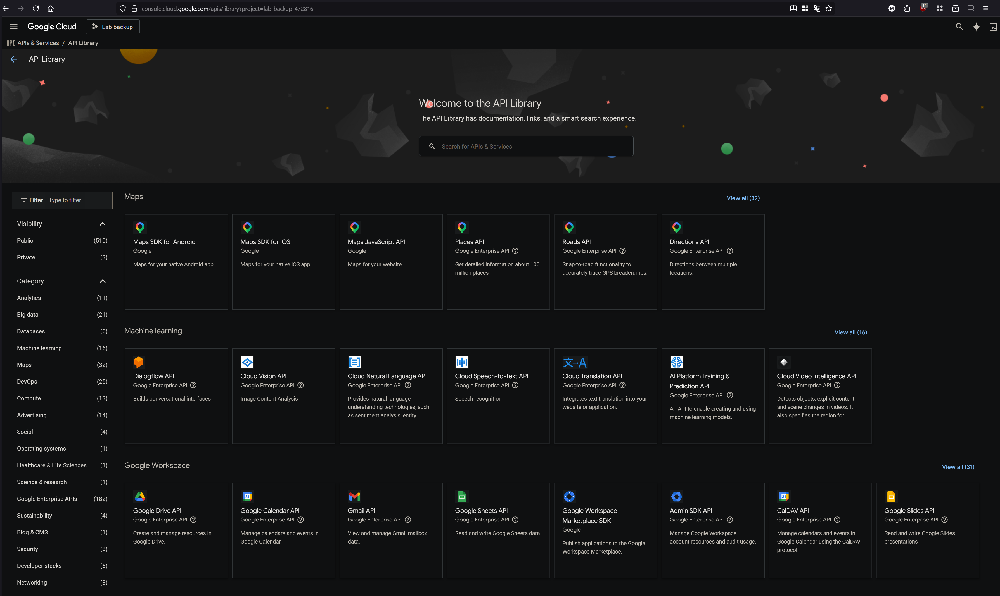
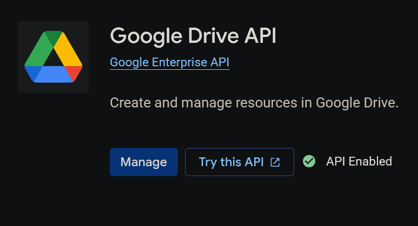
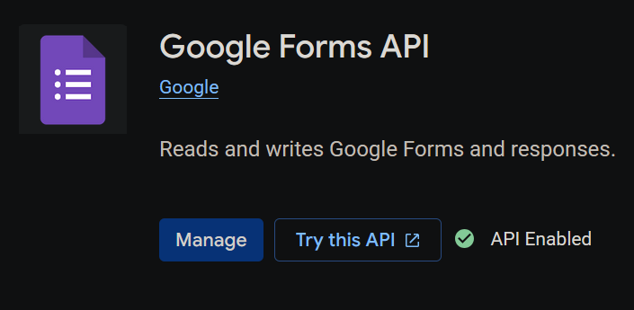

Lab Drive Backup Setup Guide
Google Shared Drive Backup Tool onboarding for lab members.
Last updated: March 22, 2026 (America/New_York)
1. Confirm Google Cloud Project
- Open Google Cloud Console.
- Use the top project picker and select the lab project.
- Confirm the project ID matches the credentials used by this tool.
2. Enable Required APIs
- Go to APIs & Services > Library.
- You should see the API Library landing page like this:

- Enable Google Drive API.

- Enable Google Forms API (
forms.googleapis.com).

Reference: Enable Workspace APIs
3. Configure OAuth (Where To Click)
- In Google Cloud Console left menu, go to APIs & Services.
- Open Google Auth platform (or OAuth consent screen in older UI labels).
- Complete Branding (app name, support email, etc.).
- Set Audience:
- Use Internal for Workspace-only lab usage, or
- External and add test users for development.
- In Data Access, ensure requested scopes include:
https://www.googleapis.com/auth/drive.readonlyhttps://www.googleapis.com/auth/forms.body.readonlyhttps://www.googleapis.com/auth/forms.responses.readonly
References:
4. Create Desktop OAuth Client
- Go to Google Auth platform > Clients in the same project.
- Create client: Desktop app.
- Download credentials JSON.
Place credentials file in one location:
- Shared default:
E:\GoogleDriveBackupTool\credentials.json - Profile-specific:
E:\GoogleDriveBackupTool\tokens\<profile>\credentials.json
Reference: Forms API Python Quickstart
5. Create Your Token Profile
- Create your folder under
tokens:mkdir E:\GoogleDriveBackupTool\tokens\your_name - Set active profile in
E:\GoogleDriveBackupTool\config.json:"token_profile": "your_name" - Or override per run:
python drive_backup.py --token-profile your_name
6. First Run Authentication
- Run:
python drive_backup.py --token-profile your_name - Browser opens Google sign-in and consent.
- If you see "Google hasn't verified this app" in test mode, choose Advanced and continue only if this is your trusted lab project.
- After success, token will be saved to:
tokens\your_name\token.pickle
7. Daily Use
- Run from
E:\GoogleDriveBackupTool:python drive_backup.py --token-profile your_name - When prompted, choose:
update: fast incremental backup into the latest mirror snapshot (daily/default).full: creates a brand new snapshot folder and downloads everything again.
- Check results in:
E:\GoogleDriveBackupTool\reports\backup_report_*.txt